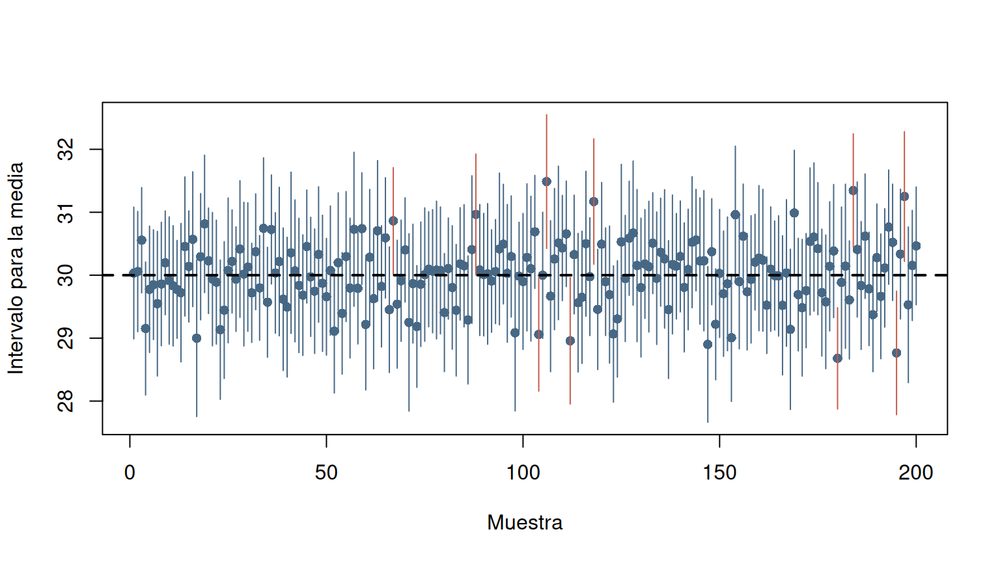
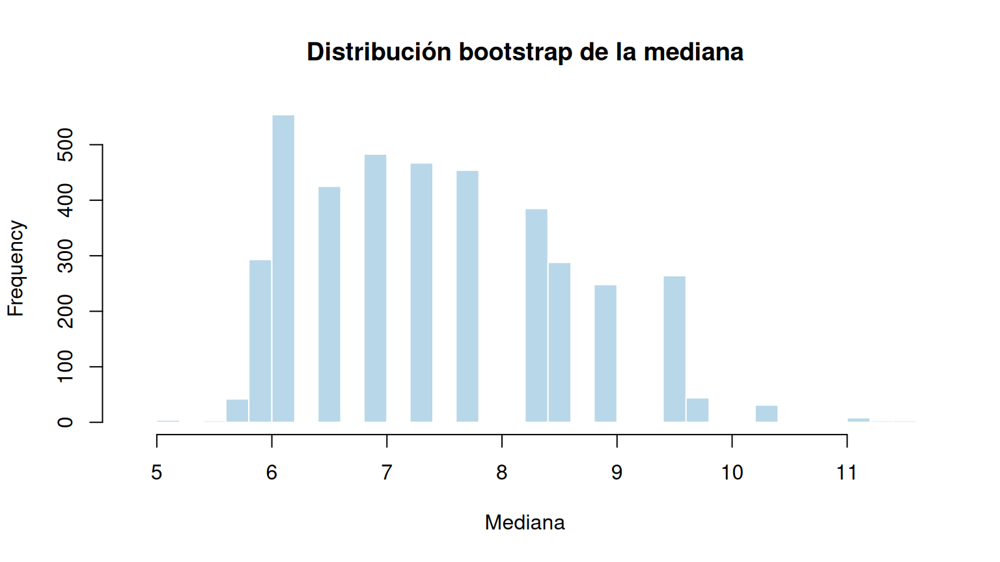

Los ejemplos son reproducibles y utilizan principalmente funciones de R base.
set.seed(18042)
M <- 200; n <- 40; mu <- 30; sigma <- sqrt(10); alpha <- 0.05
mat <- replicate(M, rnorm(n, mean=mu, sd=sigma))
medias <- colMeans(mat)
sd_m <- apply(mat, 2, sd)
error <- qt(1-alpha/2, n-1) * sd_m / sqrt(n)
li <- medias-error; ls <- medias+error
cobertura <- (li <= mu & mu <= ls)
cat("Cobertura empírica:", mean(cobertura), "\n")Cobertura empírica: 0.95 plot(seq_len(M), medias, ylim=range(c(li,ls,mu)), pch=16,
xlab="Muestra", ylab="Intervalo para la media", col="#476885")
segments(seq_len(M),li,seq_len(M),ls,
col=ifelse(cobertura,"#476885","#C65B4A"))
abline(h=mu,lty=2,lwd=2)
set.seed(41)
x <- rnorm(35, mean=82, sd=11)
t.test(x, conf.level=0.95)$conf.int[1] 79.14758 87.56004
attr(,"conf.level")
[1] 0.95# Intervalo Wilson para proporción: 47 éxitos de 80 ensayos
prop.test(47,80,correct=FALSE,conf.level=0.95)$conf.int[1] 0.4780404 0.6889414
attr(,"conf.level")
[1] 0.95# Intervalo chi-cuadrado para varianza (supone normalidad)
n <- length(x); s2 <- var(x); a <- 0.05
c(inferior=(n-1)*s2/qchisq(1-a/2,n-1),
superior=(n-1)*s2/qchisq(a/2,n-1)) inferior superior
98.09833 257.38223 set.seed(42)
a <- rnorm(32, 102, 12)
b <- rnorm(29, 95, 17)
t.test(a,b,var.equal=FALSE,conf.level=0.95)$conf.int[1] 2.809227 19.682897
attr(,"conf.level")
[1] 0.95set.seed(43)
antes <- rnorm(25,100,15)
despues <- antes-rnorm(25,7,5)
t.test(antes,despues,paired=TRUE)$conf.int[1] 5.812609 9.637337
attr(,"conf.level")
[1] 0.95x1 <- 65; n1 <- 110; x2 <- 48; n2 <- 105
a <- 0.05; z <- qnorm(1-a/2)
p1 <- x1/n1; p2 <- x2/n2
d <- p1-p2
se <- sqrt(p1*(1-p1)/n1+p2*(1-p2)/n2)
c(inferior=d-z*se,superior=d+z*se) inferior superior
0.001398916 0.266133551 # Aproximación: revisar tamaños y proporciones antes de usar.set.seed(44)
x1 <- rnorm(30,10,3)
x2 <- rnorm(26,11,5)
r <- var(x1)/var(x2); a <- 0.05
g1 <- length(x1)-1; g2 <- length(x2)-1
c(inferior=r/qf(1-a/2,g1,g2), superior=r/qf(a/2,g1,g2)) inferior superior
0.1435819 0.6735459 set.seed(45)
x <- rexp(31,rate=1/12)
n <- length(x); alpha <- 0.05
# k máximo con cobertura al menos 1-alpha
k_validos <- which(2*pbinom(seq_len(floor(n/2))-1,n,0.5) <= alpha)
if(length(k_validos)==0) stop("Muestra insuficiente para el nivel solicitado")
k <- max(k_validos)
x_ord <- sort(x)
ic_mediana <- c(inferior=x_ord[k], superior=x_ord[n-k+1])
c(ic_mediana, cobertura_teorica=1-2*pbinom(k-1,n,0.5)) inferior superior cobertura_teorica
3.2009474 11.9797420 0.9705506 set.seed(46)
x <- rlnorm(45,meanlog=2,sdlog=0.6)
B <- 4000; alpha <- 0.05
boot_medias <- replicate(B,mean(sample(x,length(x),replace=TRUE)))
boot_medianas <- replicate(B,median(sample(x,length(x),replace=TRUE)))
quantile(boot_medias,c(alpha/2,1-alpha/2)) 2.5% 97.5%
7.683295 11.281443 quantile(boot_medianas,c(alpha/2,1-alpha/2)) 2.5% 97.5%
5.816846 9.559478 hist(boot_medianas,breaks=35,col="#B8D7E8",border="white",
main="Distribución bootstrap de la mediana",xlab="Mediana")
set.seed(47)
a <- rlnorm(38,2.4,0.45)
b <- rlnorm(41,2.2,0.55)
B <- 4000
boot_d <- replicate(B,{
aa <- sample(a,length(a),replace=TRUE)
bb <- sample(b,length(b),replace=TRUE)
median(aa)-median(bb)
})
c(estimacion=median(a)-median(b),
quantile(boot_d,c(0.025,0.975)))estimacion 2.5% 97.5%
-1.148896 -4.728635 2.448464 set.seed(48)
antes <- rlnorm(30,2.5,0.3)
despues <- antes-rnorm(30,2,0.8)
diferencias <- antes-despues
B <- 4000
boot <- replicate(B,median(sample(diferencias,length(diferencias),replace=TRUE)))
c(estimacion=median(diferencias),quantile(boot,c(0.025,0.975)))estimacion 2.5% 97.5%
1.794831 1.565298 2.122002 conf <- 0.95; E <- 3; sigma <- 12
ceiling((qnorm((1+conf)/2)*sigma/E)^2)[1] 62p0 <- 0.5; E_prop <- 0.05
ceiling(qnorm((1+conf)/2)^2*p0*(1-p0)/E_prop^2)[1] 385Cambie la semilla, el tamaño de muestra, el número de réplicas y la distribución generadora. Compare la cobertura empírica de intervalos paramétricos y bootstrap en escenarios normales y asimétricos.